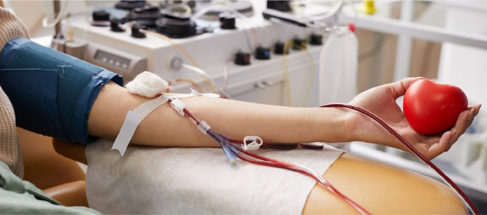

GEMA
GLOBAL EMERGENCY
MANAGEMENT ACCESS
BANCOS DE SANGRE EN PANAMÁ
La donación de sangre salva vidas todos los días. GEMA busca informar, educar y apoyar a la población panameña sobre la importancia de los bancos de sangre.
IMPORTANCIA

Los bancos de sangre son esenciales para el sistema de salud en Panamá. Permiten almacenar y distribuir sangre segura para atender emergencias, cirugías, accidentes y enfermedades.
Gracias a las donaciones voluntarias se pueden salvar miles de vidas y mantener abastecidos los hospitales del país.
¿A QUIÉN AYUDA?
- Pacientes en cirugías de emergencia.
- Víctimas de accidentes de tránsito.
- Niños y adultos con cáncer.
- Mujeres con complicaciones durante el parto.
- Personas que necesitan transfusiones constantes.
- Pacientes en tratamientos médicos especiales.
¿QUÉ ES UN BANCO DE SANGRE?
Un banco de sangre es un centro médico encargado de recolectar, analizar, almacenar y distribuir sangre para pacientes que la necesiten.
Toda sangre donada pasa por controles de seguridad para garantizar transfusiones seguras y compatibles.
GRUPOS SANGUÍNEOS
O- es considerado donador universal y AB+ receptor universal.